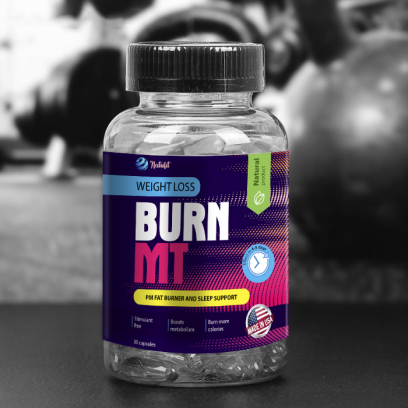
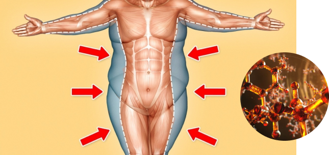
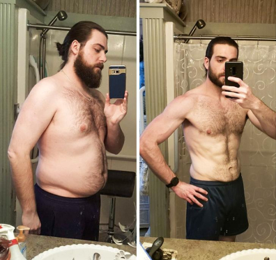

BURN MT: para aquellos que no necesitan kilos de más
Existe un monton de medios para perder peso hoy en dia. Estas son píldoras, polvos y gotas, suplementos dietéticos y quemadores de grasa ¿Cómo elegir un tratamiento que no solo elimine los kilos de más y sino tambien no sea nocivo para la salud?
Novedad de nueva generación
Representamos nuevo tratamiento BURN MT, que quema grasas perfectamente y mantiene el cuerpo en el tono correcto. Recientemente apareció en el mercado de medios para perder peso, BURN MT ya se ha ganado la confianza.
Entre similares productos para adelgazar BURN MT se beneficia de una serie de ventajas:
- no tiene efectos secundarios;
- muestra excelentes resultados;
- es un producto de nuevo nivel.
En desarrollo de BURN MT los científicos notaron que una serie de componentes, cuando se combinan las proporciones correctas, no solo pueden quemar grasas activamente, sino también ayudar a prevenir la acumulación exceso de masa grasa en zonas problemáticos. Esta es la cualidad BURN MT fue probado y los resultados fueron impresionantes.
Esto es lo que dice sobre el nuevo tratamiento Miguel Ramos, un dietologo deportivo:

« BURN MT Es una herramienta excelente para aquellos que desean mantener su cuerpo en buena forma. Esta es una herramienta indispensable para aquellos que quieren perder peso. BURN MT - Un tratamiento de nueva generación que no es adictivo, tiene un efecto tónico general y quema grasas suavemente.
Tratamientos de acción rápida tienen efectos secundarios como un rápido retorno de peso después de terminar el ciclo de tratamiento. BURN MT Gracias a la fórmula moderna, actúa sobre el cuerpo de forma lenta, suave pero confiable. Después del ciclo de este tratamiento. el peso no se devuelve .
Fórmula única
Los aminoácidos y diversos suplimentos se unieron en BURN MT en tales proporciones que el producto afecta todo el ciclo de vida del organismo:
- estimula más metabolismo activo;
- mejora el metabolismo;
- enriquece el sistema sanguineo con micronutrientes y nutrientes esenciales;
- activa el drenaje linfático.
Todas estas cualidades únicas en el complejo desencadenan el proceso natural. deshacerse del exceso de peso. Importante: debido a sus propiedades microbiológicas, BURN MT Penetra en los lugares más remotos de acumulación de grasa y estimula su descomposición.
Sin dependencia
La mayoría de las personas que quieren perder peso tienen miedo de tomar suplementos medicinales y dietéticos por una razón: tienen miedo de acostumbrarse a ellos y al consumo de por vida.
Tratamiento BURN MT no contiene ningún estimulante, no es un producto adictivo.
Ausencia en BURN MT sabores, colorantes, edulcorantes le permite tomar este remedio a las personas con enfermedades crónicas existentes: diabetes, hipertensión, reacciones alérgicas.
Clínicamente probado este nuevo tratamiento ha demostrado su eficacia. Los voluntarios que tomaron BURN MT en modo de prueba no solo notaron pérdida de peso, sino también que después del tratamiento, los kilos de más no volvieron. En este caso, los voluntarios no experimentaron efectos secundarios, casos de alergias o intolerancia.
Tratamiento BURN MT Es un producto de nueva generación para perder peso, eficaz y seguro.
A quién se recomienda BURN MT
Este tratamiento ha pasado todas las pruebas clínicas necesarias y tiene certificados de calidad exigidos por las normas legales. Fabricante de BURN MT se negó a usar sustancias estimulantes en la formula, lo que no causa adicción y dependencia. Además, la ausencia de estimulantes le permite usar este producto por la noche, debido a la fórmula molecular especial BURN MT actúa más eficaz. Para facilitar el uso BURN MT fabricado en forma de nutrición deportiva. Para una tarea específica que enfrenta una persona, dosis y ciclo de tratamiento BURN MT puede ser diferente y se elige según las características del organismo.
BURN MT recomendado para
- atletas que controlan su peso;
- para los visitantes de gimnacios en combinación con la actividad física BURN MT da un excelente resultado;
- a todos quien controla su peso como aditivo a la comida; con varias dietas
Sin efectos secundarios
Exclusividad de BURN MT en que no tiene efectos secundarios. Producto:
- no causa sensación de somnolencia y fatiga;
- hipoalergénico, no provoca irritación de la piel y erupciones cutáneas;
- regula perfectamente defecación, no irrita los intestinos;
- se puede consumir con cualquier tipo de comida;
- No requiere renunciamiento de alcohol.
instrucciones de uso
Cómo usar BURN MT, La instrucción lo dirá en detalle. La dosis depende de:
1. De peso de una persona
2. El grado de su actividad física.
3. Estilo de vida y dieta
4. La presencia o ausencia de enfermedades crónicas.
El tratamiento puede tomarse por el método rápido, cuando necesita perder peso en poco tiempo, o estirar su consumo por un período más largo.
Para cada caso, se detalla el esquema de recepción.
Nuevo asistente personal para personas que hacen dieta
Mantener incluso la dieta más moderada no es para todos, pero BURN MT elimina esta necesidad ¿Por qué limitarse a comer y renunciar a sus comidas favoritas? BURN MT le permite no cambiar su forma de vida habitual. Pero tenga la seguridad que. dentro de una semana después de tomar este tratamiento milagroso, notará que sus porciones se han vuelto más pequeñas. Porque BURN MT Contiene microelementos útiles y aminoácidos necesarios para nutricion del cuerpo.
Importante: El proceso de perder peso es bastante complicado. El proceso de pérdida de peso es bastante complejo. Aquí lo principal es no desactivar los órganos vitales, y no recuperar los kilos anteriores. Y el tratamiento BURN MT hace frente perfectamente a este objetivo: no hay daño para la salud y el resultado obtenido se conservará durante muchos años. ¿Listo para probarlo? Haga clic aquí: aquí están todos los detalles sobre la composición química BURN MT, esquema de uso, recomendaciones y características.
El peso no vuelve
Es lo que dicen los compradores, aquellos que han completado el ciclo de tratamiento BURN MT.
Juan Garcia, director de la escuela de bailes de salón, durante tres meses tomó BURN MT:
“Tuve una pausa de seis meses en el trabajo, durante este tiempo gané peso extra y fue necesario ponerme en forma rápidamente. Un amigo me recomendó el tratamiento BURN MT. Estudié las instrucciones, me di cuenta de que no se producen efectos secundarios y decidí intentarlo. En una semana, no solo perdí un par de kilogramos, sino que también noté que me había vuelto más enérgico. Pero lo importante no es que el peso desaparezca rápidamente sino que no vuelve. Tomo BURN MT casi cuatro meses, y el peso se mantiene al nivel que quería alcanzar. También quiero señalar que no se observaron efectos secundarios (sensación de pesadez, sed, fatiga) durante el ciclo de tratamiento. Por el contrario, experimenté una oleada de fuerza, una mejora en el estado de ánimo, comodidad. Y lo que es importante: perdí unos 12 kilogramos, mientras que la piel no se ha puesto laso en absoluto y no se volvió flácida. Importante: durante el uso de BURN MT no puedes cambiar tu dieta habitual. Naturalmente, se recomienda dejar los alimentos grasos, dulces y bollos ".
No hay dificultad con BURN MT Blogger Sofia Coll después de usar este producto dejó tal reseña:

También sufrí el hecho de que de repente" la cintura se ensanchó, los brazos se pusieron flacidos y mis caderas mas anchas. Sí, y no logre poner mis jeans favoritos))) Rebusqué muchas publicaciones y de repente encontré el BURN MT. Leí todo lo que pude encontrar en Internet sobre el producto y decidí probarlo por mí misma. El factor principal a favor de esta decisión fue la información de que el tratamiento prácticamente no tiene efectos secundarios. Entonces, el primer la administración de BURN MT - sabe agradable, sin sabores y edulcorantes. Estaba esperando para ver como mi estómago se comportara, si hubiera un malestar. Resultó que los temores son en vano, durante todo el tiempo de uso de BURN MT no solo no surgieron problemas, sino que la defecación volvió a la normalidad. Me pareció que tan pronto como tomé la primera dosis de BURN MT, las células grasas comenzaron a autodestruirse. Por supuesto, entiendo que este es un efecto puramente psicológico. Y hablando objetivamente, en la primera semana perdí 2.5 kg. ¡Poco, dirán algunos! ¡Realmente es mucho! No crea en esos productos que le prometen en una semana bajar 3 o más kilogramos. Es muy, muy poco saludable. Y aquí BURN MT un tratamiento suave, pero confiable. es él quema grasas sin prisa, pero luego la grasa no vuelve cuando dejas de tomar este producto ".
Comentarios

Rebeca, 42 años.
Toda la vida atormentada con sobrepeso no podía perder peso de ninguna manera, y luego resultó que tenía exactamente el problema que se describe en el artículo. El tratamiento realmente ayuda, ¡después de tomar el tratamiento perdí 12 kg!

Laura, 36 años
¡Correcto! Ahora este descubrimiento estará en todas las noticias. Bueno, esta vez, al menos material realmente valioso, y no una tontería.
Marina, 31 años
Pero me parece que este es otro engaño ... nada está claro ...

Teresa, 31 años
Y no necesitas entender nada. Es suficiente saber solo una cosa: BURN MT realmente funciona. Lo he comprobado por mí misma y ahora no tengo tales problemas, pero antes apenas podía moverme.

Irene, 47 años
En verano me avergonzaba de aparecer con la ropa abierta, debido a mi gordura . Después de completar el ciclo de tratamiento BURN MT mira el resultado. He perdido 4 tallas, y todo esto sin dietas ni entrenamientos.


Valentina, 47 años
Mantener el peso después de los 40 se está volviendo más difícil, solo permítete un bollo extra y enseguida ganas un kilogramo mas en las caderas. Resultó que el problema está solo en la resistencia a la insulina. Con tratamiento BURN MT, ¡ahora tengo el mismo peso que a los 30 años!

Maria, 29 años
Antes de hacer tratamiento BURN MT batallaba con sobrepeso durante 10 años. ¡En vano! Incluso intenté amarme por lo que soy, pero es lo que quería. Lo que siempre quería es usar talla 44. Y mi sueño se hizo realidad: Ahora peso 52 kilos.:)

Victoria, 32 años
Con ayuda de BURN MT ¡recuperé la forma que tenía antes de dar a luz! El peso se fue rápido y sin problemas.
Alba, 55 años
¡Hola! Recientemente comprado BURN MT ¡y en solo una semana ya he perdido 5 kg de peso!! A mi edad, esto es muy difícil de lograr, y estoy muy satisfecha con los resultados. ¡Sigo perdiendo peso con placer!
Lucia, 30 años.
Artículo muy interesante! Ahora que sé cómo funciona BURN MT, sin miedo a hacer daño a mi salud, definitivamente lo ordenaré.

Maria del Mar, 29 años
¡Hola a todos! Solía pesar 80 kilos, y ahora mi peso es de 55 kg, y solo logré hacerlo con BURN MT! El resultado se ha mantenido durante un mes. ¡Esta es realmente una muy buena herramienta!

Raquel, 41
He fumado durante 10 años. Una vez que logré superar la adicción a la nicotina, comencé a engordar ☹ BURN MT me compró mi hermana, ella misma perdió peso con este producto después del embarazo. De hecho, el apetito disminuye después de la primera dosis. Volví a mi peso ideal y, al mismo tiempo, no solo no me hice daño, ¡sino que también obtuve mucha energía durante el día!